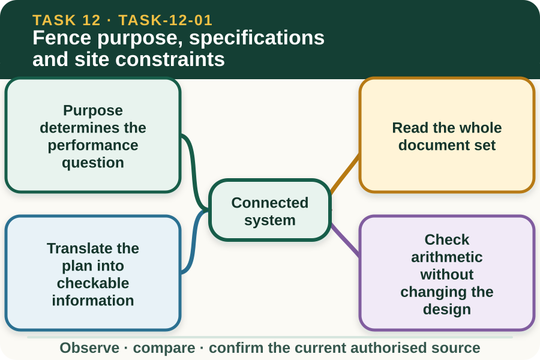

Learning purpose
Extract purpose, line, dimensions, materials and constraints from a fictional fencing brief.
Task 12 · Lesson 1 of 4
Extract purpose, line, dimensions, materials and constraints from a fictional fencing brief.
Learning purpose
Extract purpose, line, dimensions, materials and constraints from a fictional fencing brief.
Success criteria
Learning boundary
Supplementary learning and formative practice only. Current RTO assessment, local procedures and authorised supervision control real work.

A fencing brief begins with what the boundary or enclosure must achieve, such as separating stock groups, defining access, protecting an area or marking a property division. Purpose affects the specification and the evidence used to judge the completed work.
Do not assume that an existing fence or a familiar design suits a new purpose. The authorised plan and supervisor define the livestock, land-use, access and maintenance needs that the work must address.
A job may be described across a brief, plan, site map, material schedule, risk documentation and manufacturer information. Each source answers a different question, and a missing page can make an apparently simple instruction incomplete.
Record document title, version or date and status where available. If two plans show different line positions or dimensions, preserve the conflict and ask the authorised supervisor which current source controls.
Extract the approved line, segment lengths, corner and gate references, material categories, dimensions, quantity schedule and stated quality criteria. Keep units attached to every number and distinguish a plan dimension from a learner's site observation.
A scaled drawing represents relationships but must be read using its stated scale and notes. Never estimate a real boundary, service location or work dimension from a screenshot or decorative diagram.
Simple addition can reveal whether line-segment totals agree with the stated overall length. A quantity check can also reveal a missing item or duplicated entry in a supplied fictional schedule.
The learner shows the calculation and flags the discrepancy rather than altering the line, dimensions or material count. Design corrections remain with the authorised plan owner and supervisor.
Fictional worked example
Observed evidence: A fictional brief dated 7 August 2027 states an overall fence line of 230 m, while the current sketch lists segments of 80 m, 75 m and 70 m, totalling 225 m. A second undated sketch shows a different gate position. Decision and reason: Lewis cannot decide which dimension or gate position is intended because the document set conflicts. Safe action: He preserves both sketches, shows the 5 m difference and asks the supervisor to confirm the current plan. Result: The supervisor withdraws the undated sketch and issues a corrected authorised drawing. Next check or record: Lewis records the drawing identifier, confirmed overall length and unresolved site-verification hold point without creating a construction method.
Terrain, access, vegetation, waterways, livestock movement, public interfaces and known or possible services can affect whether the documented line is ready for work. A desk plan cannot prove the current site is clear or unchanged.
The learner identifies visible constraints and missing verification, then keeps the work at the authorised hold point. Service-location decisions, access approval and any change to the design require current local sources.
A useful confirmation states the purpose, controlling documents, approved line and dimensions, material schedule, known constraints, unresolved items and person who owns the next decision. This shows understanding without pretending the site is ready.
The website brief is supplementary rehearsal only. The controlled student package, teacher demonstration and RTO assessment process remain separate and are not copied into the public site.
Formative practice
Each option explains the consequence. These answers save only on this device.
Written application
Apply and keep a learning record
Annotate the supplied privacy-safe brief and drawing with source identity, dimension totals, material categories, constraints and supervisor questions. Do not produce a method or alter the design.
Learning record: A supplementary-learning brief markup with a transparent arithmetic check and authority hold points.
Lesson responses and the activity are formative learning only. Formal sufficiency and competence remain with the current RTO process.
Source basis: AHCINF206 Release 1 requirements to confirm work instructions and prepare for supervised fencing work. The current local plan, site verification, student package and teacher direction control every real design and practical decision.